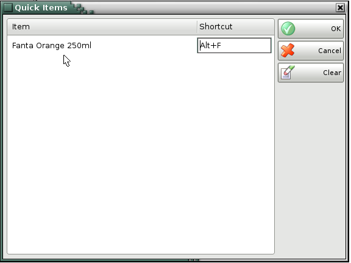

Quick Items
The window Quick items is for configuration of the so called �fast buttons� for items, which are most often used in the operations. With the created keyboard shortcuts, the items can be filled-in in all fields, where it is necessary.

�2006-2015 Microinvest, All rights reserved